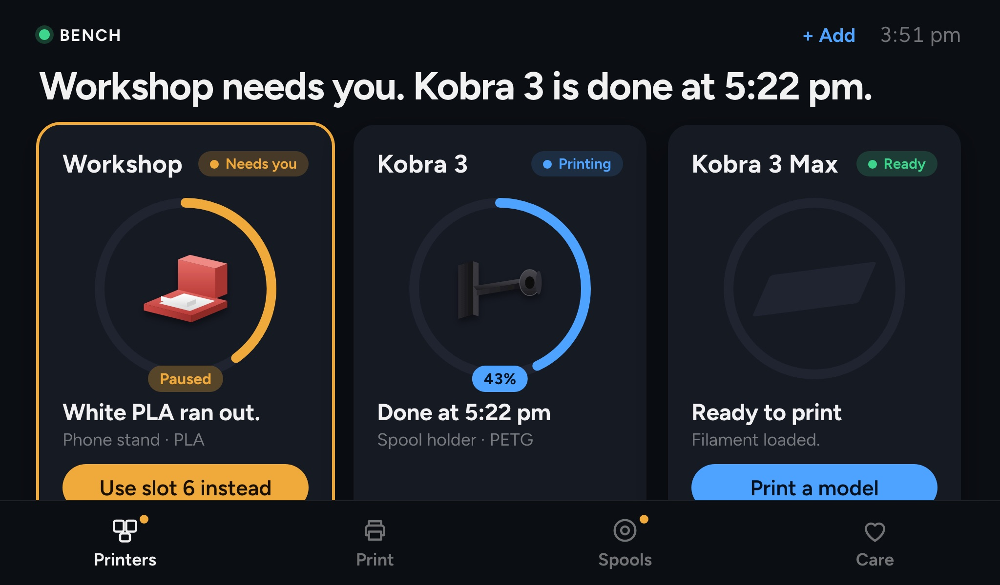
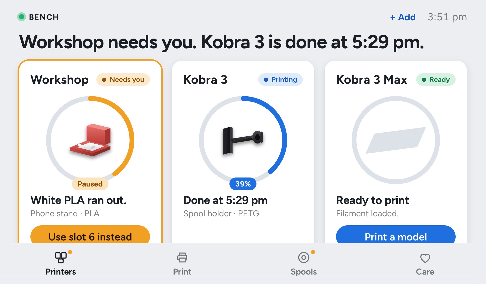

Bench Box · new, help us test it
A small computer on your Wi-Fi that runs Elyir Bench for printers that can't run it themselves, slices for them, and shows every printer on one screen. Each printer keeps its own brain: with the box off, it prints as before.


Kobra 3 and Kobra 3 Max over Anycubic's own LAN mode, with nothing installed on the printer: start, pause, resume, stop, warm up and cool down, run on a real Kobra 3.
New · help us test itA spare Raspberry Pi 4 or 5 and the Elyir Bench card: on its first screen, pick Bench Box. Testers first.
New · help us test it The cardAsk to testA case and screen of its own. Not for sale; nothing to order yet.
ComingWith the box off, each printer prints as before, from its own screen.
Works todayA Pi 4 or 5, or a NUC, on your Wi-Fi slices for printers that can't, and shows them all on one screen.
New · help us test it Slicing on the printerModels wait on one shelf. Queue one and whichever printer is free prints it.
New · help us test itShown on the bench, not driven yet.
ComingGot a Kobra 3 or Kobra 3 Max and a spare Pi? Ask to test, and we'll write when there's a place for yours.